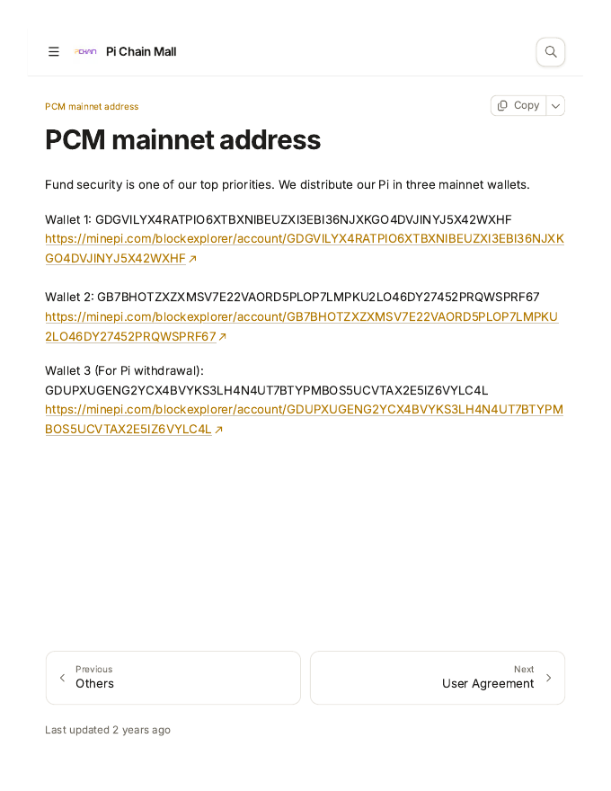
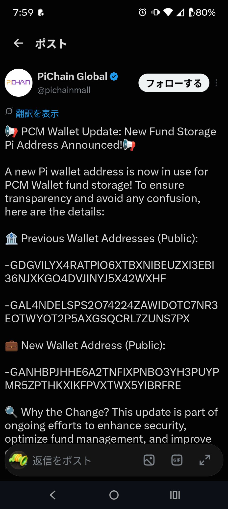
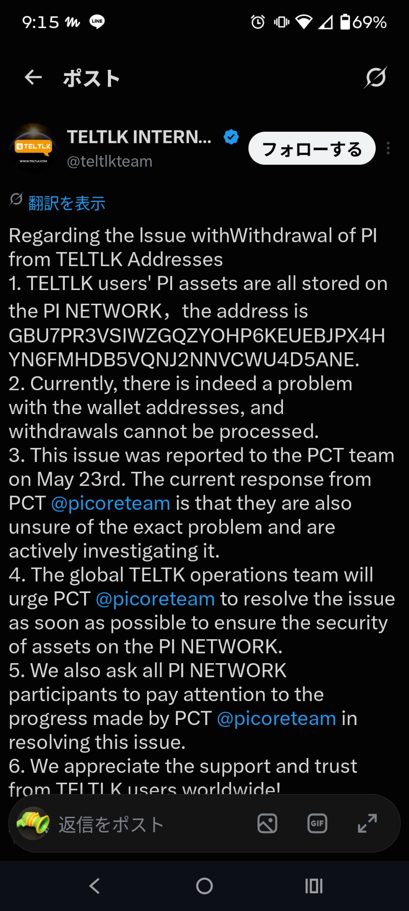
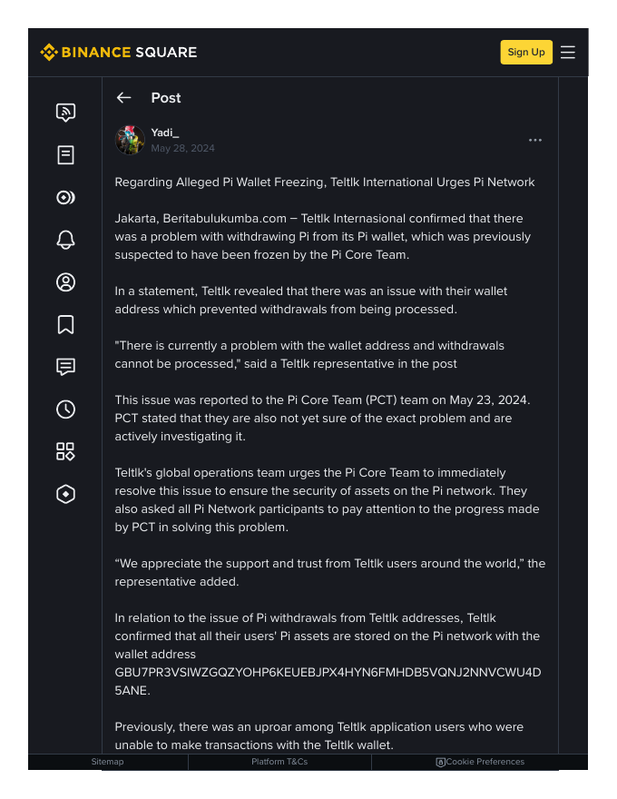

Pi Network Suspected-Address Analysis Report
How the 8,132 suspected addresses connect, where the funds went, and a check of inflows to the two hubs
Japanese version: pi_thief_trace_report.html
Summary
The 8,132 suspected addresses form one giant group of 8,126, with 6,365 in a mutual-transfer core; after the Open Network launch, about 295 million Pi flowed out, mostly to exchanges; the rest are a small group of 3 and 3 isolated addresses.
- Tracing transfers within the list, the 8,132 suspected addresses split into one giant group of 8,126, one small group of 3, and 3 isolated addresses.
- In directed terms, the strongly connected mutual-transfer core has 6,365 addresses. Entry points are few (41 send-only addresses), while 1,503 addresses only ever receive within the list.
- After the Open Network launch (20 Feb 2025), 295,373,814 Pi flowed out of the list to external addresses. The largest destination is an exchange wallet: OKX received 103,624,335 Pi from 2,792 listed addresses. teltlk, which was left with about 25.19 million Pi from the enclosed period after outflows, sent 17.55 million Pi to a single destination (GCQH…) after the launch.
- Much of the Pi that flowed out of the list went from a small number of large senders to exchanges, and mostly passed onward through the large destinations beyond them as well. The amount that never left comes to at least about 641,440 Pi.
About the target list
The suspected-address list analysed here is findsp2.l_spam.txt (8,132 addresses). It was built from a "core" of 278 addresses extracted by the list creator's program at the time, expanded two steps along the recipients of large payments (over 999 Pi). The details of how the core was extracted and how the expansion worked, verified against the original programs and output files, are recorded in the appendix (Appendix: How the target list was built (verified against the original programs)).
Related files (links to GitHub Pages)
Each link points directly to a file hosted on the same GitHub Pages site as this report. Clicking a link opens the file in the browser.
| File | Size | Contents |
|---|---|---|
| group_01_8126addr.txt | 452 KB | All addresses of the giant group (8,126) |
| group_02_3addr.txt | 0 KB | Small group (3 addresses) |
| isolated_3addr.txt | 0 KB | Isolated addresses (3) |
| reciprocal_pairs.txt | 2544 KB | Reciprocal pairs (22,853) |
| pure_sinks_1503.txt | 127 KB | Receive-only addresses (1,503) |
| exit_senders_top50.txt | 4 KB | Top 50 exit addresses (after Open Network) |
| exit_destinations_top50.txt | 4 KB | Top 50 external destinations (labelled) |
| exit_pairs.json | 9582 KB | Complete exit-pair data (38,437 pairs) |
| exit_by_sender.json | 847 KB | Complete exit-sender aggregation (5,419) |
| exit_by_destination.json | 4472 KB | Complete external-destination aggregation (28,155) |
| directed_metrics.json | 3490 KB | Directed metrics (all addresses) |
| second_hop.json | 34 KB | Second-hop tracing data (6 unknown consolidators, all-time) |
| second_hop_summary.txt | 12 KB | Second-hop tracing summary (text) |
| third_hop.json | 10 KB | Third-hop tracing data (GDGII…, all-time) |
| third_hop_summary.txt | 6 KB | Third-hop tracing summary (text) |
| victim_hop.json | 12 KB | Victim-hop verification data (21,141 non-list senders, original 3 conditions + effects) |
| victim_hop_summary.txt | 6 KB | Victim-hop verification summary (text) |
| evidence_pcm_gitbook.pdf | 77 KB | Basis for the pi chain mall label: preserved copy of the official documentation page 'PCM mainnet address' (PDF) |
| evidence_teltlk_binance.pdf | 761 KB | Basis for the teltlk label: preserved copy of the Binance Square article (PDF) |
| evidence_pcm_x_post.jpg | 212 KB | Basis for the pi chain mall label: screenshot of the official X post of 2025-07-11 announcing the wallet update (supplied by the list creator, JPEG) |
| evidence_teltlk_x_post.jpg | 265 KB | Basis for the teltlk label: screenshot 1 of the official X post of 2024-05-27 (account header, title and text; supplied by the list creator, JPEG) |
| evidence_teltlk_x_post2.jpg | 262 KB | Basis for the teltlk label: screenshot 2 of the official X post of 2024-05-27 (full text including signature; supplied by the list creator, JPEG) |
Result 1: How the addresses connect
The full payment history of every address was retrieved (5,722,075 payments scanned; 8,131 of 8,132 accounts retrieved successfully), and only payments where both sender and recipient are in the list were kept (self-transfers excluded; duplicate operations removed by operation id). That gave 1,464,362 intra-list payments and 108,010 directed pairs, of which 22,853 are reciprocal. Connectivity follows multi-hop paths (A to B to C), not just direct pairs: only 0.26% of in-group pairs have a direct transfer, and the typical shortest path is 3 hops (mean 2.79).
Group 1 (giant group): 8,126 addresses
- Each address transacts with an average of 26.6 other listed addresses.
- Largest hub: GCYGA2GHSEXGEWY5AO7JPAJZGKKCSZNAOOTHBXQDCUR6RWT7666IXBKX (involved in 2,205 intra-list pairs)
- Most frequent pair: GABGEE3UIGX3RZNWY7TGPWLFKVQOQEBHSZTP3Y65DSAUORYVMOQM5MM3 to GDPYUVUM6MXY5RUAWPTATGVWNT34DSTDNC3J6KGD4EAVW36XTNQALX7N (5,618 payments, 2022-10-20 to 2023-01-05)
Group 2 (small group): 3 addresses
- GA23OVVVUBQ4GVU57MRPYR5M3J6IWGTYFKZTNOHMGP34WOYQQ2COMVJC
- GBA4FSKGHYS5FJI2AXYQAQDHN6J64K5J4HGOCVJRSOMHRSITT6RQXCKR
- GCMPYHMMBVXPQTH36ZZY36M3BYD24KGFVB52YBEASKCKYFHUBTZ3DULT
Isolated addresses: 3
- GASI5VHBQIAQGCAT5LGZG3AWPSDEHDB2UUGRWVDNOLNTOHJ3RD5HB4KS (full history of 492 payments checked, 0 intra-list)
- GBBVVNPSCWICZOEZ3P3BSZAJEB7MZP27QQOU7XALFNDMKNBDFMFUHUIH (full history of 107 payments checked, 0 intra-list)
- GDP252PEO7OC2TJOZ34TZ7CPODLQFAKJYT4DQWFXRVEUBSQ3VMPRTYGL (full history of 105 payments checked, 0 intra-list)
Directed structure (the largest strongly connected component)
- Total SCCs: 1,708. The largest strongly connected component has 6,365 addresses.
- Source-side components: 46; send-only addresses: 41.
- Sink SCCs: 1,536; addresses that only receive within the list: 1,503.
- The structure is "few entry points, the largest strongly connected component (6,365 addresses), and more than 1,500 endpoints".
Result 2: Where the funds went — exits and tracing beyond them
Exit scan (native transfers to outside the list, on or after 2025-02-20T08:00Z)
The suspected activity is centred before the Open Network, and funds were expected to move out once external transfers became possible. All 8,132 addresses were scanned for payments after the Open Network launch only (0 errors, no HTTP 429).
- Listed addresses that sent funds out: 5,419
- External destinations: 28,155
- Total transfers: 678,353, amounting to 295,373,814 Pi
Top external destinations (final-destination candidates)
| # | External address | Received (Pi) | Senders | Transfers | Identity |
|---|---|---|---|---|---|
| 1 | GALYJFJ5SVD45FBWN2GT4IW67SEZ3IBOFSBSPUFCWV427NBNLG3PXEQU | 103,624,335 | 2,792 | 39,555 | OKX (third-party investigation report / news) |
| 2 | GBC6NRTTQLRCABQHIR5J4R4YDJWFWRAO4ZRQIM2SVI5GSIZ2HZ42RINW | 42,711,375 | 1,229 | 15,850 | Possibly Gate.io related |
| 3 | GDFNWH6ZFJVHJDLBMNOUT35X4EEKQVJAO3ZDL4NL7VQJLC4PJOQFWJ75 | 18,332,536 | 1,056 | 13,355 | Bitget (third-party investigation report) |
| 4 | GCQH27CCPDZGYFYD6U5RDK3E2THFATTE2XFSYZRALXZ6XUW42CSE4722 | 17,550,012 | 3 | 212 | Unknown |
| 5 | GAL4NDELSPS2O74224ZAWIDOTC7NR3EOTWYOT2P5AXGSQCRL7ZUNS7PX | 13,821,491 | 3 | 587 | Pi Chain Mall's previous wallet (official post, 2025-07-11) |
| 6 | GDIOBGWJZC7CZW32J3GAYUZGYGI5X3MK3O2W5KPF2OUPHCX3ZOYLLD24 | 12,902,653 | 1 | 108 | Unknown |
| 7 | GD5HGPHVL73EBDUD2Z4K2VDRLUBC4FFN7GOBLKPK6OPPXH6TED4TRK73 | 10,883,653 | 756 | 7,728 | MEXC (third-party investigation report) |
| 8 | GANHBPJHHE6A2TNFIXPNBO3YH3PUYPMR5ZPTHKXIKFPVXTWX5YIBRFRE | 6,539,051 | 11 | 79 | Pi Chain Mall's new wallet (official post, 2025-07-11) |
| 9 | GCP3OIKPKX2YUZ4M6ESNL4K22D4AZZHE6TJFJ7RIVLZBMOVVB3AMIW5F | 5,000,000 | 1 | 3 | Unknown |
| 10 | GD24QVE4R42E4XRDF6T5IN6UAQLD2WN7OQGUC2FBHFUUZM7GLE4KG6YA | 1,054,208 | 96 | 485 | Unknown |
| 11 | GARYRU6FPGLPSQPVZIKHSDMDPFUFMARWQB2FQTEL2NJQU4VDDCAPWROY | 1,000,100 | 1 | 2 | Unknown |
| 12 | GC3KQK3PJWRJDRIL2PNRMSYEM5YVP545HGVYGLGSAQBN35RIIRP4PGSI | 871,957 | 5 | 241 | Unknown |
| 13 | GCVPLCHFAZFO6MSW6CWLGDUTXASYP7G4W7KQ3H6FPHYBSLYRRUNBEKHT | 634,262 | 1 | 12 | Unknown |
| 14 | GC4D4NSMEIZD4CEP7QUVS3TNZLNMLGSBIUNAOX2MS7VY2CS2WXFZXPHP | 627,922 | 1 | 11 | Unknown |
| 15 | GCVPDTCX42QDHKOHFS2NLNDYGEYK5D42O4LSXUSCLEZYQSWFOVQHBJTD | 595,403 | 1 | 18 | Unknown |
The top 4 destinations account for 61.7% of all outflows. The identified ones are major exchange wallets, and the earliest exits began on launch day itself (about 5 hours after the Open Network started). Exchange labels are based on a third-party investigation report (the BWX8 report) and news coverage, not on official exchange announcements.
Unidentified consolidation destinations
- GCQH27CCPDZGYFYD6U5RDK3E2THFATTE2XFSYZRALXZ6XUW42CSE4722: almost all of its 17,550,012 Pi came from a single sender, GBU7PR3VSIWZGQZYOHP6KEUEBJPX4HYN6FMHDB5VQNJ2NNVCWU4D5ANE (209 transfers, 2025-02-23 to 2026-10-26).
- GAL4NDELSPS2O74224ZAWIDOTC7NR3EOTWYOT2P5AXGSQCRL7ZUNS7PX: 13,801,320 Pi of its 13,821,491 Pi came from the largest hub, GDGVILYX4RATPIO6XTBXNIBEUZXI3EBI36NJXKGO4DVJINYJ5X42WXHF (585 transfers). This address was later publicly identified, in Pi Chain Mall's official X post of 11 July 2025, as PCM's own previous fund-storage wallet; with most of its inflow coming from GDGVILYX4RATPIO6XTBXNIBEUZXI3EBI36NJXKGO4DVJINYJ5X42WXHF, likewise a PCM wallet, the flows are consistent with movement between PCM's own wallets (see the appendix, "Basis for the two hub labels").
Top exit addresses (within the list)
| # | Address | Sent (Pi) | Destinations | Transfers |
|---|---|---|---|---|
| 1 | GDGVILYX4RATPIO6XTBXNIBEUZXI3EBI36NJXKGO4DVJINYJ5X42WXHF | 20,338,945 | 5 | 613 |
| 2 | GBU7PR3VSIWZGQZYOHP6KEUEBJPX4HYN6FMHDB5VQNJ2NNVCWU4D5ANE | 17,550,000 | 1 | 209 |
| 3 | GBKTDITOCN3XWVOOXBCQJCYJT3DZZ6BBWDZXZ62DI5ONRMM7UZTI7QXV | 16,664,813 | 1,818 | 15,633 |
| 4 | GADWXCSXPA7NT43FGGBY5TRQYANVQD7C5KPBXHRN3SNIUXGC45U2VKWG | 11,522,127 | 3 | 373 |
| 5 | GCMFINMWAET7KBD56E6XOQPHUBFXX4ZRYFSALP5VPBBNAUYLMU5SL4TU | 6,221,457 | 519 | 1,872 |
| 6 | GANR2MWRM734P7L2LELK4FOYRZK3H2B6UEMVA6FIJFXIFA6GHQOWLZ25 | 5,000,000 | 1 | 3 |
| 7 | GDS6BPV3EWPKTE7KKCOBR53ZYKE7PXPNM4EWA4QMINZ4PXWDXZDVWGEG | 4,608,358 | 4 | 306 |
| 8 | GB4NE6W5A55TTBPKLRC3QOQAPPXKQWAQASQL5CQVFU77C2B6KNLOKSPI | 3,842,607 | 1 | 82 |
| 9 | GAMJ32VIM5PS5UBFDX6TNYH2TSDXOLW5KKW5M2LFS54J7EXEP5KRFRJT | 2,779,225 | 4 | 19 |
| 10 | GDVTLNOAPBYRLASOBQ2GDC3F4X36DZNGHDR2X7KX6XDGSX3YEQZ6LPYS | 2,626,504 | 4 | 710 |
| 11 | GDH3SINMG4A4FHP6R27OSPMQBKITR2F2MEN36KVSD7DNLNNRSFY4RGTZ | 2,565,153 | 88 | 216 |
| 12 | GD4P3XTVAJ6DEGI22IPMCDDOQL2MFPO42SLOK3XQII7GJLDQMCUDAR25 | 2,402,849 | 39 | 447 |
| 13 | GAIT3UVFAE4FFCTRPTHNI5PGRDSN2NDQGQOUXVWTYWC2DSGLWMRMYGEF | 2,384,188 | 1 | 107 |
| 14 | GBSUS3FJNXJQSVW6V3E323EDAUEBG76CR4NS65PCNMST2F3XUWXBDBHB | 2,301,260 | 1 | 159 |
| 15 | GDZ6KNUHRKTA6JMKXBRJOYHT3CJBUY6HTRG3FZLJC6OBZYN3SK2ET4SB | 2,144,670 | 3 | 45 |
How many addresses send to exchanges?
- Listed addresses that sent directly to the four identified exchanges (OKX / Gate-linked / Bitget / MEXC): 4,464 in total (OKX 2,792; Gate-linked 1,229; Bitget 1,056; MEXC 756; duplicates removed).
- 1,091 of them used two or more exchanges, and 47 used all four.
- Amounts, however, are concentrated: of the 175,551,899 Pi sent to these exchanges, the top 100 senders account for 50.8% and the top 500 for 82.1%. Only 19 addresses sent 1,000,000 Pi or more. The median sender sent just 3,321 Pi.
Hoarding-type terminal addresses (funds never moved out)
| Address | Total received (Pi) | Outflows | Current balance (Pi) |
|---|---|---|---|
| GDPPSQOYMLVWGSRCOKDAY2P57QHQXXCFMUUMZSTYHBWYXQ3VZG74BUJK | 373,284 | 0 | 373,298 |
| GA7HY7JCZXIK6T4MHMKEW2EKTQ4LYTRX3OGTVHFLOXPRZUD77V56CYZY | 267,999 | 0 | 268,141 |
| GC2YY746MHVYZ6WNCJ4KQCQWLZPKGDKQCDQ67N22ZAMJV64R3BZWZMHD | 396,342 | 4 | 96,364 |
| GBRGJJLLNUKRDX7BHONUK2U3P73GVXVYE5ERNLYIPDUZIOMSDJ4TICYC | 92,564 | 2 | 88,604 |
| GCNATGQNE46TDRJVPMRWL2ISXB4QZIQHCOAWYKLUUVAPLHT2NDQFVLWP | 32,132 | 7 | 28,002 |
By contrast, the largest hub GDGVILYX4RATPIO6XTBXNIBEUZXI3EBI36NJXKGO4DVJINYJ5X42WXHF is a pass-through, not a hoard: about 47.26 million Pi flowed in and the same amount flowed out over its lifetime, leaving a balance of only 2,923 Pi. An address that only receives within the list is therefore not necessarily a terminal point.
Tracing beyond the exits (second hop)
The large consolidation destinations that remained unidentified in the exit scan above were traced one step further. The targets are the top six non-exchange destinations of the outflow from the list. Their full payment histories were retrieved (no HTTP 429; all six completed; no scan caps reached) and aggregated for native Pi only. Amounts are all-time totals, unlike the exit scan above (which covered only the period from 20 Feb 2025), so each address's total inflows here are larger than the amount it received in the exit scan. Exchange labels are based on third-party investigation reports and news coverage, not on official exchange announcements.
| Address | Verdict | Balance (Pi) | Total in (Pi) | Total out (Pi) | To exchanges (Pi) | Back to list (Pi) | Key note |
|---|---|---|---|---|---|---|---|
| GCQH27CCPDZGYFYD6U5RDK3E2THFATTE2XFSYZRALXZ6XUW42CSE4722 | Pass-through / dispersal | 24,005 | 28,112,429 | 28,087,220 | 514,819 | 4,571,686 | Only ~1.8% of outflows went directly to exchanges; dispersed in 136,410 small payments to 10,892 destinations |
| GAL4NDELSPS2O74224ZAWIDOTC7NR3EOTWYOT2P5AXGSQCRL7ZUNS7PX | Pass-through / circular | 37,997 | 26,394,225 | 26,355,413 | 2,994,249 | 7,897,275 | Large flows back to the list, including 5,113,374 Pi cycled back to the hub GDGVILYX4RAT… (later identified as PCM's previous wallet) |
| GDIOBGWJZC7CZW32J3GAYUZGYGI5X3MK3O2W5KPF2OUPHCX3ZOYLLD24 | Exchange-exit (with caveat) | 749 | 13,433,254 | 5,482,504 | 5,480,200 | 2,003 | 99.96% of payment outflows went to exchanges, but there is a ~7.95M Pi balance gap attributable to claimable balances |
| GANHBPJHHE6A2TNFIXPNBO3YH3PUYPMR5ZPTHKXIKFPVXTWX5YIBRFRE | Mixed (half retained + circulation) | 7,061,704 | 13,093,557 | 6,031,483 | 1,200,040 | 1,050,002 | ~54% of inflows remain as balance; also cycled 3,780,000 Pi to GAL4… (later identified as PCM's new wallet) |
| GCP3OIKPKX2YUZ4M6ESNL4K22D4AZZHE6TJFJ7RIVLZBMOVVB3AMIW5F | Pass-through | 16,165 | 7,603,294 | 7,587,129 | 1,244,772 | 140,029 | 67% of outflows went to GDGII… (traced in the third-hop subsection below) |
| GD24QVE4R42E4XRDF6T5IN6UAQLD2WN7OQGUC2FBHFUUZM7GLE4KG6YA | Pass-through / single-sink relay | 373 | 46,307,778 | 46,306,560 | 0 | 0 | Almost everything forwarded to a single address, GDL66HS4YTUL…; only ~2.3% of inflows were list-derived |
Notes on each target
- GCQH27CCPDZGYFYD6U5RDK3E2THFATTE2XFSYZRALXZ6XUW42CSE4722: Not a hoard. It broke most of its inflows into 136,410 small payments dispersed to 10,892 destinations. Only about 1.8% of outflows went directly to exchanges, and 31,135 payments totalling 4,571,686 Pi went back to 713 listed addresses. It is a transit point, not a terminal.
- GAL4NDELSPS2O74224ZAWIDOTC7NR3EOTWYOT2P5AXGSQCRL7ZUNS7PX: Not a hoard. Its 111,391 payments dispersed funds to 6,771 destinations, and it circulates heavily with the list — including 28,729 payments totalling 5,113,374 Pi sent back to the in-list hub GDGVILYX4RAT…. It also circulates in both directions with GANHBPJHHE6A…. Note: this address was later publicly identified, in Pi Chain Mall's official X post of 11 July 2025, as PCM's own previous fund-storage wallet. GDGVILYX4RAT…, the source of most of its inflows, is likewise a PCM wallet (see "Basis for the two hub labels"), so the circulation observed here is consistent with movement between PCM's own wallets. A public label does not, however, prove who directed any given flow.
- GDIOBGWJZC7CZW32J3GAYUZGYGI5X3MK3O2W5KPF2OUPHCX3ZOYLLD24: 99.96% of its payment outflows went to exchange wallets (Gate.io-linked 4,450,200 Pi / OKX 1,030,000 Pi). However, there is a balance discrepancy of about 7.95 million Pi, and a check of /operations found 61 create_claimable_balance and 58 claim operations, which are outside the payments feed. This route is considered the main cause of the gap, so it cannot be concluded that all funds reached exchanges.
- GANHBPJHHE6A2TNFIXPNBO3YH3PUYPMR5ZPTHKXIKFPVXTWX5YIBRFRE: About 54% of inflows remain as balance, while most outflows are circulation to GAL4NDELSPS2… (3,780,000 Pi), an exit to the Gate.io-linked wallet (1,200,040 Pi), and a return to the in-list hub (1,050,002 Pi). It is neither a pure terminal nor a mere transit point. Note: this address is the new fund-storage wallet Pi Chain Mall announced in its official X post of 11 July 2025, replacing GDGV… and GAL4…. Its retained balance and its two-way flows with GAL4… (the previous wallet) are consistent with that wallet rotation inside PCM.
- GCP3OIKPKX2YUZ4M6ESNL4K22D4AZZHE6TJFJ7RIVLZBMOVVB3AMIW5F: Its balance is only 16,165 Pi. 67% of its outflows — 5,087,483 Pi — went to the unknown address GDGII3Q2US4L…, traced in the third-hop subsection below. It also sent 1,244,772 Pi to OKX and 1,100,000 Pi to GCQH27CCPDZ… (with which it exchanges payments in both directions).
- GD24QVE4R42E4XRDF6T5IN6UAQLD2WN7OQGUC2FBHFUUZM7GLE4KG6YA: It collected 46,307,778 Pi in 130,657 payments from 49,598 senders and forwarded almost all of it in 9,508 payments to a single external address, GDL66HS4YTUL…. Nothing went to exchanges or back to the list. However, only 1,054,409 Pi of its inflows (about 2.3%) was list-derived, and its senders include exchange wallets themselves, so this address looks like a large general relay only weakly connected to the list.
In conclusion, neither of the two primary targets (GCQH… and GAL4…) hoards funds: both are pass-through / dispersal hubs that break roughly the same amount they receive into a large number of small payments. The only large retention among the six was GANH…; GDIO… is exchange-exit in shape, but its verdict carries the claimable-balance caveat.
Third hop (GDGII…)
The unknown address GDGII3Q2US4L4NQSR3PYVXMLDEVGEIJA27A3LOFANWTLME2Q5IURFOFM — the largest destination of GCP3OIKPKX2Y… in the second-hop tracing above — was traced in the same way over its full payment history (3,472 records retrieved; no HTTP 429; no cap reached).
- Total inflows: 305,019,942 Pi (2,453 payments from 359 senders) / Total outflows: 293,497,102 Pi (1,019 payments to 74 destinations) / Current balance: 11,522,831 Pi (about 3.8% of all inflows).
- Sent to exchanges: 260,627,120 Pi in total (about 88.8% of outflows) — OKX 223,162,807 Pi, Gate.io-linked 28,681,952 Pi, Bitget 7,070,103 Pi, MEXC 1,712,258 Pi.
- Its largest source of funds is OKX itself: 263,382,413 Pi (about 86% of all inflows). It is a large two-way wallet that both receives from and sends to exchanges.
- Direct inflows from the suspected list: 0 Pi. The 5,087,483 Pi from GCP3OIKPKX2Y… is only about 1.7% of its total inflows. Flows back to the list amount to just 9.95 Pi, and flows to the second-hop consolidation addresses are 0 Pi.
- The difference between the balance and (inflows − outflows) is only −9.19 Pi, consistent with accumulated transaction fees. There is no large claimable-balance-type gap.
Verdict: GDGII… is not a consolidation or terminal point of the suspected network; it is a general, very large wallet with heavy two-way flows with exchanges. The funds from GCP3 most plausibly merged into this far larger flow and exited mainly to OKX, so this branch terminates at the exchanges. The largest non-exchange next destination is GBDCL7MLFVDZ… (27,830,915 Pi, with flows in both directions), but with about 89% of outflows already terminating at exchanges, a fourth hop would be of low value.
Result 3: Verifying inflows to the hubs (victim hop)
In the logic of the list's construction, drain-type transfers occur on the hop "victim address outside the list → address inside the list". The two major in-list hubs, pi chain mall (GDGVILYX4RATPIO6XTBXNIBEUZXI3EBI36NJXKGO4DVJINYJ5X42WXHF) and teltlk (GBU7PR3VSIWZGQZYOHP6KEUEBJPX4HYN6FMHDB5VQNJ2NNVCWU4D5ANE), were therefore tested by applying the list creator's original three conditions, unchanged, to all of their senders from outside the list, to check whether drain-shaped inflows actually exist. The full histories of both hubs were retrieved (no HTTP 429, 0 errors, no caps reached), covering 21,141 distinct non-list senders in total, all of which were scanned.
Framing (important): the senders that matched the conditions in this verification are victim candidates — wallets that appear to have been drained — which is the exact opposite side from the 8,132 suspected addresses analysed in this report (the receiving side of drains). This is not an addition to the suspected list, and the matched addresses must not be treated as suspected addresses.
Method: lockup-release times from effects, and balance reconstruction
- Lockup-release times cannot be obtained from payments, so effects were used. From the
rel_beforepredicate (in seconds) of type_i: 51 effects (claimable_balance_claimant_created), the release time = the effect's creation time + rel_before seconds. This reading was verified: for every case checked, the claim of the same balance_id (type_i: 52) occurred at or after the computed release time. - The conditions are the original three, unchanged: (a) the address has never received any payment; (b) its first send occurred less than 3 minutes after its lockup release; (c) its balance after that send was below 2 Pi.
- Post-send balances were reconstructed by accumulating effects in ledger order and deducting transaction fees. Balances that could not be reconstructed were to be reported as "unknown" rather than guessed; for all senders passing condition (b), the balance was in fact determined (0 unknown).
The conditions are applied in stages, layered in the order (a) → (b) → (c); senders satisfying all of them are called (d) full matches.
The funnel
| Target | Non-list senders (universe) | (a) No incoming payments ever | (b) First send <3 min after release | (d) Full match (first send) |
|---|---|---|---|---|
| pi chain mall | 18,692 senders (127,525 payments / 17,213,513 Pi) | 3,407 (18.2%) | 7 | 2 (1,702.02 Pi) |
| teltlk | 2,932 senders (26,694 payments / 18,047,562 Pi) | 326 (11.1%) | 5 | 3 (1,665.03 Pi) |
Most non-list inflows are of the ordinary kind and fail at (a) (the sender has received payments before); even among the senders passing (a), most sent more than 60 minutes after their release. In addition to the 5 (d) full matches on the first send, one further sender to pi chain mall matched all three conditions on a later send, for a total of 6.
The 6 (d) full matches (victim candidates)
| Target | Sender address | Date | Amount (Pi) | Gap after release (sec) | Post-send balance (Pi) | Note |
|---|---|---|---|---|---|---|
| pi chain mall | GDILWZSPSNDJGQNMIWMKMIZDL7FNNJ7O5B5KNLXC3Y2TRUZHNRRVKLAU | 2025-06-02 | 1,702 | 51 | 1.306 | |
| pi chain mall | GARGMMZXT4HNTM6Q3LVB5CREOXGF5NTCBZGNEVOYNLIZ3LRAGIQ3C7CX | 2025-04-01 | 0.02 | 150 | 1.752 | *1 |
| pi chain mall | GCHFXPWHDUNLSWHJTHWAT2BJNIEV5AIIKF5LR3L2U3VFMFCEASERKZ22 | 2025-06-27 | 59 | 44 | 1.816 | *2 |
| teltlk | GCXVSPUPGZB3AYXKJ4IDSJBVJPSV2MOZCYRLTBRB26TB6DKS5BF5KKVA | 2024-09-19 | 666 | 42 | 1.242 | |
| teltlk | GBFBVVFWW53S6IH4QVQAICV4MSF4HTKQQ7MFKH7OFVVUSNGMN5UNLEFX | 2026-05-22 | 115.7 | 34 | 1.078 | |
| teltlk | GBTHBF4377QSZFNYHC3A4IV25LBKXJU3UURYUN724K6RA3ENWGK3OS6P | 2026-08-05 | 883.33 | 1 | 0.997 |
*1 The first send was 0.02 Pi; its sends to the target total 0.232 Pi over 7 payments. *2 Matched on a later send, not on its first send.
All six are textbook drain shapes: claim and send immediately after the release (the shortest gap is 1 second), leaving a post-send balance of about 1 Pi (equivalent to the minimum balance). However, across both hubs there are only 6 such senders, and the amounts are small.
Limitations of this verification
- This verification covers all periods and all non-list senders. The original list, by contrast, was extracted from a specific period in 2023 using a different entry condition — "spam candidates" that had sent 1,000 Pi or more. Because both the period and the entry differ, this result neither directly refutes nor directly confirms the original list construction. The pi chain mall matches in particular skew to 2025 onward, a different phase from the original 2023 extraction.
- If this is used to argue against the "sales revenue" explanation, the caveat remains that, in this all-period scan, direct drains into the hubs are quantitatively small.
- Pi Chain Mall in particular actually sells goods for Pi and has a very large number of senders, so some of the matching transfers may by coincidence be users paying for their own purchases right after their lockup was released. It cannot be concluded that all six were victims' transfers.
- This is a different hop from the drain-pattern check on senders inside the list (composite proxy: 0% for both hubs); the two results must not be conflated.
- On-chain fund flows show the possibility of involvement only; they do not identify a person or prove theft.
Limitations
- One account could not be retrieved for the connection analysis (GCWY2CAUXY3DTFINS7B7B2PNJJVSLAPLBZBXXOOLQ3FF6OWB6I5BTP4S); its membership of Group 1 was confirmed from counterparties' histories, so this does not affect the classification.
- 67 accounts had more than 20,200 payments and were truncated to the oldest 20,200. This only undercounts activity inside Group 1; it does not affect group splits or the isolated-address determination.
- The connection analysis does not report amount totals (asset types were not separated during collection). All amounts in the exit and tracing sections are native Pi only.
- The exit scan covers only transfers from inside the list to outside it, in native Pi. Second-hop movements outside the list and pre-open transfers to outside the list are not included.
- The outflow total may include ordinary sales by listed users. Not all of it is asserted to be illicit funds.
- Amounts in the second- and third-hop tracing are all-time native totals, which is a different aggregation range from the exit scan (from 20 Feb 2025 onwards only). Total inflows in the hop tracing are therefore larger than the amounts each address received in the exit scan.
- For GDIO…, there is a gap of about 7.95 million Pi between the payments aggregation (inflows 13,433,254 Pi, payment outflows 5,482,504 Pi) and its current balance (749 Pi). Claimable-balance operations found via /operations (61 creates, 58 claims) are considered the main cause, but the final destination of funds that moved through that route cannot be traced from the payments records.
- On-chain fund flows alone cannot identify a person or prove theft. This report shows connections and likely destinations of funds.
Appendix: How the target list was built (verified against the original programs)
The main text ("About the target list") gives only an outline. In November 2026, the original programs and output files from the time of creation were recovered and checked, so the method verified from the program code and the files is recorded here.
- Extracting the core (sa2405.txt): the creator's program (v3.05) was run month by month from October 2023 to February 2024, examining addresses that had sent 100 Pi or more. It collected sends that left a balance below 2 Pi and whose sender had no incoming payment records, and then extracted the sends made within 3 minutes of a lockup release (both kinds of release: the end of the lockup period the user had chosen, and the end of the two-week migration pending period). The result was saved as sa2405.txt (485 lines; 278 addresses after removing duplicates).
- Expansion (findsp2.py): taking sa2405.txt as input, the program collected the recipients of payments over 999 Pi from each core address (first ring), then repeated the same step once for the newly added addresses (second ring). The core plus both rings, deduplicated, is findsp2.l_spam.txt (8,132 addresses). In other words, of the 8,132, only the 278 core addresses were individually confirmed by the conditions of step 1 (such as a send within 3 minutes of a release); the rest are addresses that received a single payment of over 999 Pi from a core or first-ring address.
- Intermediate version: findsp_resd_out.txt (7,967 addresses), produced from the output of the earlier program (findsp.py), is entirely contained in the 8,132 (the difference of 165 addresses exists only in findsp2.l_spam.txt).
- Lower-threshold version: a list built with the threshold lowered to 499 Pi (findsp3.py; 12,932 addresses) was also produced at the time, but it is not part of this report's analysis. The target is only the 8,132 addresses in findsp2.l_spam.txt.
- Identity check (November 2026): the findsp2.l_spam.txt preserved in the original archive matches the list used in this report with no differences. Re-running the expansion step over the full enclosed-period payment data produced 12,228 addresses, which contain all 8,132 (the re-run is larger because it covers a longer period than the original run).
The original programs and output files are stored in the archive folder of this repository.
Appendix: Basis for the two hub labels
This report refers to the two largest hubs in the list as "pi chain mall" and "teltlk". The basis for those attributions is set out here. A label shows only that the business itself has publicly stated the wallet is theirs; it does not by itself prove that the operator directed every flow. Because source pages can be deleted or changed, a preserved copy of each source (PDF or image) is hosted on this site.
pi chain mall — GDGVILYX4RATPIO6XTBXNIBEUZXI3EBI36NJXKGO4DVJINYJ5X42WXHF
- The official documentation of PiChain Global (GitBook, "PCM mainnet address", PCM mainnet address (GitBook)) states that PCM distributes its Pi across three mainnet wallets: Wallet 1 is this address, GDGVILYX4RATPIO6XTBXNIBEUZXI3EBI36NJXKGO4DVJINYJ5X42WXHF; Wallet 2 is GB7BHOTZXZXMSV7E22VAORD5PLOP7LMPKU2LO46DY27452PRQWSPRF67; and Wallet 3 (for Pi withdrawal) is GDUPXUGENG2YCX4BVYKS3LH4N4UT7BTYPMBOS5UCVTAX2E5IZ6VYLC4L.
- Cross-checked against the 8,132-address suspect list: Wallet 1 and Wallet 2 are in the list; Wallet 3 is not. In addition, the mainnet wallet address that pi chain mall's official account (@pichainmall) publicly announced on X on 1 October 2022 ("Our mainnet wallet address is …"), GBCRZX73YTPTA7HSHVXNXYGJCUUKVUQMASELPXZ5WQVDUT7RLINS6N3Y, as quoted by Newsway, is also in the list. By contrast, the two further wallets named in the official post of 11 July 2025 described next — the "previous" wallet GAL4NDELSPS2O74224ZAWIDOTC7NR3EOTWYOT2P5AXGSQCRL7ZUNS7PX and the newly announced wallet GANHBPJHHE6A2TNFIXPNBO3YH3PUYPMR5ZPTHKXIKFPVXTWX5YIBRFRE — are not in the list. So 3 of the 6 publicly known PCM wallets are members of the suspect list.
- As a further primary source, @pichainmall's X post of 11 July 2025, "PCM Wallet Update: New Fund Storage Pi Address Announced!" (X post (@pichainmall, 2025-07-11)), explicitly lists this address, GDGVILYX4RATPIO6XTBXNIBEUZXI3EBI36NJXKGO4DVJINYJ5X42WXHF, together with GAL4NDELSPS2O74224ZAWIDOTC7NR3EOTWYOT2P5AXGSQCRL7ZUNS7PX, as PCM's "Previous Wallet Addresses (Public)", and announces GANHBPJHHE6A2TNFIXPNBO3YH3PUYPMR5ZPTHKXIKFPVXTWX5YIBRFRE as its new fund-storage wallet. The reason given in the post is to enhance security and optimise fund management — a wallet rotation. A screenshot of the post, supplied by the list creator, is preserved below. The attribution of this address therefore rests on both PCM's official documentation and its own official post.

Preserved copy of the source (PDF): evidence_pcm_gitbook.pdf

Screenshot of the official X post of 11 July 2025 (supplied by the list creator): X post (@pichainmall, 2025-07-11)
teltlk — GBU7PR3VSIWZGQZYOHP6KEUEBJPX4HYN6FMHDB5VQNJ2NNVCWU4D5ANE
- The primary source is the official X post by TELTLK INTERNATIONAL (@teltlkteam) on 27 May 2024, "Regarding the Issue with Withdrawal of PI from TELTLK Addresses" (X post (@teltlkteam, 2024-05-27)). Its first point states in substance that all TELTLK users' Pi assets are stored on the PI NETWORK and gives this address, GBU7PR3VSIWZGQZYOHP6KEUEBJPX4HYN6FMHDB5VQNJ2NNVCWU4D5ANE. Points 2–6 say that withdrawals could not then be processed, that the issue had been reported to the Pi Core Team (@picoreteam) on May 23rd, that PCT was investigating it, and that TELTLK's global operations team urged a prompt resolution. The screenshot preserved below (supplied by the list creator) shows that post.
- The post is still live at the URL above. It was long thought to have been deleted because it does not surface in search results, but that belief was mistaken. A Binance Square article published the same day (republishing Beritabulukumba.com, Indonesia), "Regarding Alleged Pi Wallet Freezing, Teltlk International Urges Pi Network" (Binance Square article), is secondary coverage reporting this same statement.
- Supporting context: coverage in May 2024 (HokaNews / CoinGabbar) reported Teltlk's announcement that it held more than 18 million Pi, without printing the address.
- The withdrawal problem was temporary and has since been resolved: as checked on 2026-11-01 the account holds about 25.39M Pi, received payments on 2026-10-31, and its most recent outgoing payment was on 2026-10-26 (50,000 Pi) — the address is still active.

Screenshot of the official X post of 27 May 2024 (supplied by the list creator): X post (@teltlkteam, 2024-05-27) / Screenshot of the full text: evidence_teltlk_x_post2.jpg

Preserved copy of the source (PDF): evidence_teltlk_binance.pdf
Generated by Moko (Muse) / Muse Spark 1.3 - Target list: https://github.com/tysseo7/Pi-Thief-Trace/blob/main/findsp2.l_spam.txt